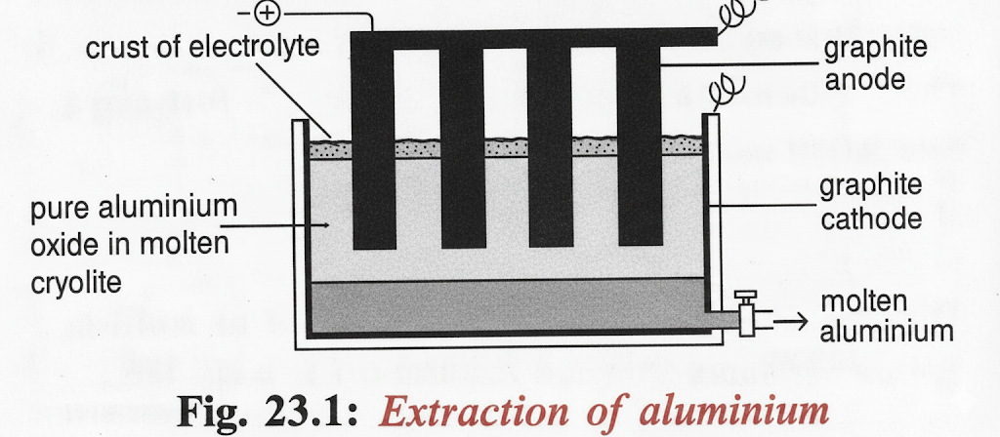

It is a good **conductor of electricity** and **heat**.
It is **ductile** (can be drawn into wires) and **malleable** (can be hammered into sheets).
It is **resistant to corrosion** due to the formation of a solid oxide layer on the surface.
Occurrence
Aluminium is one of the **most reactive metals** and therefore occurs naturally in the **combined state** as ores, occupying the **upper position of the electrochemical (reactivity) series**. It is extracted from its ore, **Bauxite** (hydrated aluminium oxide, $\text{Al}_2\text{O}_3 \cdot 2\text{H}_2\text{O}$).
The Extraction Process (Hall-Héroult Process)
The extraction of aluminium occurs in **three main stages**:
**Purification of the ore Bauxite** (to get pure alumina, $\text{Al}_2\text{O}_3$).
**Dissolving pure alumina** in molten cryolite ($\text{Na}_3\text{AlF}_6$ or $\text{Na}_3\text{AlF}_6$).
**Electrolysis in the cell**.
Stage 1: Purification of Bauxite (The Process)
The Bauxite ore is impure, containing iron(III) oxide ($\text{Fe}_2\text{O}_3$) and silicon ($\text{IV}$) oxide ($\text{SiO}_2$) as impurities. The purification involves mixing the crushed ore with a **hot, concentrated sodium hydroxide solution** ($\text{NaOH}$).
The amphoteric aluminium oxide dissolves, forming soluble sodium aluminate. The impurities ($\text{Fe}_2\text{O}_3$ and $\text{SiO}_2$) do not react and are filtered off as a sludge. Pure aluminium hydroxide ($\text{Al}(\text{OH})_3$) is then precipitated from the solution and strongly heated to obtain pure alumina ($\text{Al}_2\text{O}_3$).
Stage 2 & 3: Electrolysis
Alumina has a very high melting temperature ($1200^\circ\text{C}$), making direct melting uneconomical. Therefore, it is dissolved in **molten cryolite** ($\text{Na}_3\text{AlF}_6$ or $\text{Na}_3\text{AlF}_6$), which acts as a solvent and **lowers the melting point** and **increases ionisation**.

Fig. 23.1: Extraction of Aluminium by Electrolysis (Hall-Héroult Cell)
The electrolytic cell uses a **carbon (graphite)** lining which acts as the **cathode** (Negative Electrode). The anodes are also made of **carbon (graphite)** and are suspended in the electrolyte at the top of the cell.
Cameroonian Context: The high electrical energy required for this process means aluminium companies must be located near a **cheap power source**, like the one found in **Edea, Cameroon**.
Electrolytic Reactions
In the molten electrolyte, the alumina ($\text{Al}_2\text{O}_3$) dissociates into ions:
**At the Anode ($\mathbf{+}$):** Oxidation occurs. Oxide ions are discharged, forming oxygen gas, which reacts with the carbon anode. The anodes must be replaced frequently as they burn away.